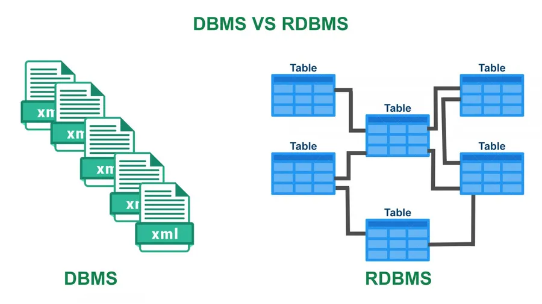
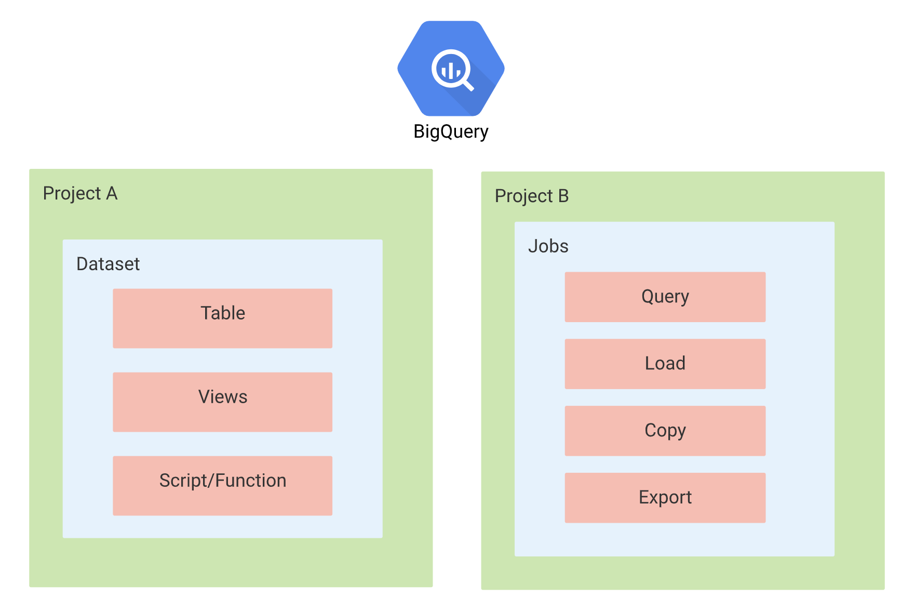

Summary
Logging
- 사용자 로그 데이터, 이벤트 로그 데이터 ..
- 머신러닝 인퍼런스 요청 로그, 인퍼런스 결과 등을 저장해야 함
데이터의 종류
데이터베이스 데이터(서비스 로그)
- Database에 저장되는 데이터
- 서비스가 운영되기 위해 필요한 데이터
- 고객 가입일, 물건 구입 내역 등..
사용자 행동 데이터(유저 행동 로그)
- Object storage, Data Warehouse에 주로 저장
- 유저 로그라고 지칭하면 보통 사용자 행동 데이터를 의미
- 서비스에 반드시 필요한 내용은 아니지만, 더 좋은 제품을 만들기 위해 또는 데이터 분석시 필요한 데이터
- 앱이나 웹에서 유저가 어떤 행동을 하는지 나타내는 데이터
- UX와 관련해서 인터랙션이 이루어지는 관점에 발생하는 데이터
- click, view, swipe ..
인프라 데이터(Metric)
- 백엔드 웹 서버가 제대로 동작하고 있는지 확인하는 데이터
- request 수, response 수
- DB 부하
- 트래픽
Metric, Log, Trace
- Metric
- 값을 측정할 때 사용
- cpu, memory 사용량
- Log
- 운영 관점에서 알아야하는 데이터를 남길 때 사용
- 함수의 호출, 예외 처리 등..
- Trace
- 개발 관점에서 알아야하는 것
- 예외 trace
데이터 적재 방식
Database(RDBMS)
- 데이터가 다시 웹, 앱 서비스에서 사용되는 경우 활용
- 실제 서비스용 DB
구체적으로 들어가면
- 관계형 데이터베이스(relational)
- 행과 열로 구성
- 데이터의 관계를 정의하고, 데이터 모델링 진행
- 비즈니스와 연관된 중요한 정보
- 고객 정보, 주문 요청, 내역 ..
- 영구적으로 저장해야 하는 것은 데이터베이스에 저장
- 데이터 추출시 SQL 사용
- MySQL, PostgreSQL ..

https://www.stechies.com/differences-between-dbms-rdbms/

Naver Boostcamp AI Tech 5th - Product Serving
Database(NoSQL)
- Elasticsearch, Logstash or Fluent, Kibana에서 활용하는 경우
구체적으로 들어가면
- 스키마가 strict한 RDBMS와 다르게 스키마가 없거나 느슨함
- Not Only SQL
- 데이터가 많아지며 RDBMS로 트래픽을 감당하기 어려워서 개발됨
- 일반적으로 RDBMS에 비해 쓰기와 읽기 성능이 빠름
- Key Value store, document, column family, graph ..
- json 형태와 비슷하며 xml 등도 활용됨
- MongoDB
SQL vs NoSQL

https://expeed.com/when-to-use-sql-databases-vs-nosql-databases-making-the-right-decision/
Object Storage
- S3, Cloud Storage에 파일 형태로 저장
- csv, parquet, json ..
- 별도로 DB나 warehouse로 옮기는 작업이 필요함
구체적으로 들어가면
- 어떤 형태의 파일이여도 저장할 수 있는 저장소
- 특정 시스템에 발생하는 로그를 xxx.log에 저장한 후, object storage에 저장하는 형태
- 비즈니스에서 사용되지 않는 분석을 위한 데이터
- 이미지, 음성 등을 저장
Data Warehouse
-
데이터 분석시 활용하는 데이터 웨어하우스로 바로 저장
- 여러 공간에 저장된 데이터를 한곳으로 저장
- 데이터 창고 같은 느낌으로 알면 편함
- RDBMS, NoSQL, Object Storage 등에서 저장한 데이터를 한 곳으로 옮겨서 처리
- RDBMS와 같은 SQL을 사용하지만 성능이 더 좋은 편
- AWS Redshift, GCP BigQuery, Snowflake ..
Print vs Logging
- print는 콘솔에만 output을 출력하는 경우로 생각하자
- logging은 file, web socket 등 파이썬이 다룰 수 있는 모든 포맷으로 output 출력 가능
- 언제 어디서 해당 output의 발생을 알 수 있음
- 심각도에 따른 분류를 할 수 있음
- develop 환경에서는 debug로그 까지, production 환경에서는 info 로그만
1
2
3
4
5
6
7
8
9
10
11
12
13
14
15
16
17
18
19
20
21
22
23
24
25
26
27
28
#### 1. logging module 써보기
import logging
logger = logging.getLogger("example") # root logger
logger.info("hello world") # 아무런 로그도 출력되지 않습니다.
#### 1.1 logging module config 추가하기
import logging.config
logger_config = {
"version": 1, # required
"disable_existing_loggers": True, # 다른 Logger를 overriding 합니다
"formatters": {
"simple": {"format": "%(asctime)s | %(levelname)s - %(message)s"},
},
"handlers": {
"console": {
"level": "DEBUG",
"class": "logging.StreamHandler",
"formatter": "simple",
}
},
"loggers": {"example": {"level": "INFO", "handlers": ["console"]}},
}
logging.config.dictConfig(logger_config)
logger_with_config = logging.getLogger("example")
logger_with_config.info("이제는 보이죠?")
- Config 설정을 해야 output 출력
- 지정한 로그 포맷 형태로 로그 출력
"format": "%(asctime)s | %(levelname)s - %(message)s" - https://docs.python.org/3/library/logging.html
Python Logging Component
Logger
- 로그를 생성하는 method 제공(logger.info(), ..)
- 로그 level과 logger에 적용된 filter를 기반으로 처리해야 하는 로그인지 판단
- handler에게 logrecord 인스턴스 전달
logging.getLogger(name)으로 Logger Object 사용- name이 주어지면 해당 name의 logger 사용
- name이 없으면 root logger 사용
- 마침표로 구분되는 계층 구조
logging.getLogger('foo.bar')->logging.getLogger('foo')의 자식 logger 반환
logging.setLevel(): Logger에서 사용할 level 지정
Handler
- Logger에서 만들어진 log를 적절한 위치로 전송(파일 또는 콘솔 출력..)
- level과 formatter를 각각 설정해서 필터링 할 수 있음
- StreamHandler, FileHandler, HTTPHandler ..

https://www.toptal.com/python/in-depth-python-logging
- Formatter
- 최종적으로 log에 출력될 포맷 설정
- 시간, logger 이름, 심각도, output, 함수 이름, line 정보, 메세지 ..
Logging Flow

https://docs.python.org/ko/3/howto/logging.html
Online Serving Logging (BigQuery)
BigQuery에 Online Serving Input과 Output 로그를 적재하는 과정
- 빅쿼리 테이블을 세팅
- 빅쿼리에 적재하기 쉽게 json 형태로 로그를 정제 -> pythonjsonlogger 사용
- Python logging 모듈을 사용해서 빅쿼리에 실시간으로 로그 적재(file과 console에도 남을 수 있도록 handle 지정)
BigQuery Data Structure

https://jayendrapatil.com/google-cloud-bigquery/
- GCP의 project 내부에 BigQuery 리소스가 존재
- Dataset 안에 Table, Views ..
참고
- https://github.com/zzsza
- Naver Connection Boostcamp AI Tech 5th - Product Serving(변성윤)
 My Github
My Github